Observe the existing affordances, visual variables and interaction flows for a given use case – for example, delivering an academic presentation or attending a specific meeting at late hours – and propose better approaches (if any).
Use case: “having a presentation in a messy and noisy room”;
The interaction flow is:
Desktop application
1. Sign in to zoom
At first zoom has a login page which is intuitive. Input boxes have placeholders specifying what we must write there. The button “Sign In” is deactivated initially suggesting that we have to complete the input and then press “Sign in”.
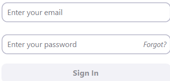Here, affordances are represented by logos of apps we cand sign in with and they are accompanied by their names below them.

2. Enter the room
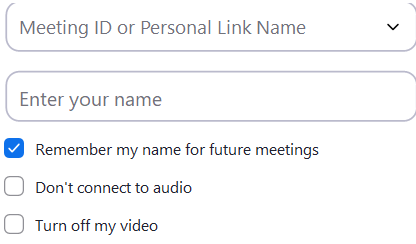Input boxes have specific placeholders.
Check boxes below with “don’t connect to audio” and “turn off my video” are unticked by default allowing us to select a background first and activate our microphone only when we talk
3. Change background
To change the background, we have to click on the arrow near the camera icon. This “arrow” suggests that a hamburger menu will open.
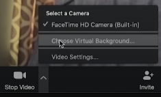4. Mute microphone when not speaking
For the microphone we have a specific image with a microphone and is very suggestive that we have to click on it in order to mute because below the icon is written “Mute”.
Web application
The steps are the same as for the desktop application.
Proposing better approaches:
If there is noise in your room when you are talking the noise will be heard by the other participants. I would implement a system to cancel the unnecessary noise.
Compare the visual metaphors and idioms and suggest similar ones for a textonly interaction (see CLI – Command Line Interface).
Idioms
First idioms that we encounter are check boxes from logi in section. Those are good idioms because the user already used check boxes on other apps and will remember what check boxes represent.
For a text only interactions I would suggest that the app asks the user if he want to check the settings and the user will respond with “Y” for yes and “N” for no.
Next we have the small arrow that will open a menu. The user will learn what options will be revealed by the arrow.
For a text only interactions I would create a specific command that shows on the screen the menu and the user will navigate through menu using arrows up and down, and will select the desired command pressing enter.
In option section we ecounter the “Gallery View” idiom.
In meeting settings area we have plenty of radio boxes that are idioms.
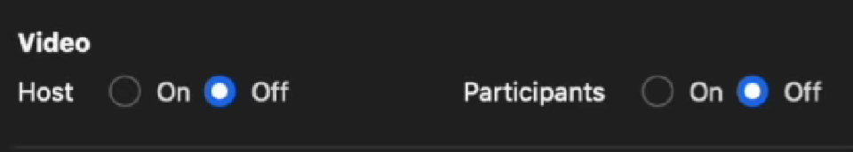For text only interactions I would implement the same concept from the first idiom.
Metaphors
We encounter metaphors that suggest if microphone and camera are on or off.
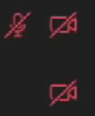A text only interaction app could replace this with a text saying: “camera: ff, microphone: off”.
Another metaphor is used for inviting user in meeting.
Discuss the cognitive overload in special conditions/contexts.
According tu uxplanet.org: “In terms of UX design, cognitive load is the strain a user experiences when he/she has to think too much just to get something done. Anything that requires users to stop and figure out what to do next is cognitive load.”
A special context where cognitive overload appears may be when an elder person uses this app. If that person wants to share a white board with the other participants he/she should go to “File” / ”Your Computer” / ”White Board”. There are three steps to do and this could pe too much for an elder who doesn’t have enough experience.
Another special context could be when a person who doesn’t know english very well is the host of a presentation and wants to end it. That person will have to chose between “End meeting for all” and “Leave meeting”.
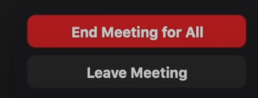• List minimum three improvements that can be made to optimize these applications from the point of view of the main audience on at least two platforms – for instance, Web + mobile native, desktop native + mobile native. Each improvement will be listed
The first problem is available for all platforms: web, desktop, mobile.
Problem: The main audience don’t pay to upgrade the app to premium version so they encounter the following problem with time limit of the meeting.
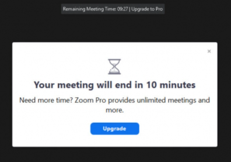Solution:Increase the time limit to at least 2 hours because Zoom app is very used in schools and universities where a course lasts more than the current time limit.
How the empiric laws (Fitts’, Hick’s, Steering) might be reconsidered/adapted in the context of multi-device interaction?
In the context of multi-device interaction in Zoom, Fitts' law may need to be adapted keeping account of the different types of pointing devices (trackpads, graphics tablets, touchscreens, etc.) with varying levels of precision and control. Additionally, the distance between the devices and the targets may vary depending on the layout of the user's workspace. Therefore, a revised version of Fitts' law for multi-device interaction in Zoom might need to take into account the variability of pointing devices and the physical layout of the user's workspace.
Hick's law states that the time required to make a decision increases logarithmically with the number of choices presented. In the context of multi-device interaction in Zoom, Hick's law may need to be reconsidered to account for the fact that users may be switching between different devices and modes of interaction (using a mouse on a laptop, then switching to a touchscreen on a tablet). This can lead to increased cognitive load and decision-making time, particularly if the user needs to adjust to different options or gestures. A revised version of Hick's law for multi-device interaction in Zoom might need to account for the additional cognitive load associated with switching between devices and interfaces.
Steering law may need to be adapted in Zoom to account for the fact that users may be using different types of devices with different interfaces for controlling the cursor (mouse, touchpad, touhscreen, game controller, etc.). Additionally, the angle of movement may vary depending on the layout of the user's workspace and the position of the devices. A revised version of Steering law for multi-device interaction in Zoom might need to take into account the variability of devices and the physical layout of the user's workspace.
List three new features that can be added to improve the experience and sketch those new features on paper and/or digitally.
Mood Indicators: This feature would allow users to indicate their mood or emotional state during a meeting, and this thing would be avalaible in Zoom Participants menu, along the e-mail, name and the meeting ID. Users could select an emoji or icon that reflects their current mood, such as happy, sad or neutral. The mood indicators could provide valuable feedback to the host or presenter about how the audience is feeling. This feature would help to promote empathy and understanding among people and could lead to more productive and engaging meetings.

Virtual World: This feature would allow users to choose special avatars and communicate to each other, similarly with a game like Club Penguin. They will enter in special rooms, with different backrounds and special avalaible activities.

AI-powered Meeting Assistant: This feature would use natural language processing (NLP) and machine learning algorithms to do specifical actions in Zoom application, asked by the user. This would be particularly useful for users who struggle to keep up with the fast pace of meetings and want to save time on administrative tasks.

Observe the existing affordances, visual variables and interaction flows for a given use case – for example, delivering an academic presentation or attending a specific meeting at late hours – and propose better approaches (if any).
Use case: “Attending a Business Meeting on Google Meet”:
Web application
Existing affordances:
Existing visual variables:
The interaction flow is:
Mobile Application
The steps are the the same as for the desktop application.
Proposing better approaches:
Add a feature allowing the users to install extensions for the Google Meet. This would allow the users to add new features to the app, ' developed by third-party developers.
Compare the visual metaphors and idioms and suggest similar ones for a textonly interaction (see CLI – Command Line Interface).
Idioms
First idiom that we encounter the text box from sign in section. This is a good idiom because the user already used text boxes in other programs and knows what these can be used.
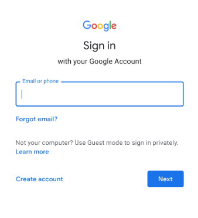A text only interaction app could replace this with a text saying: “email:email@mail.com; phone:empty”.
Next we have three dots that will open a menu. The user will see what options will be revealed.
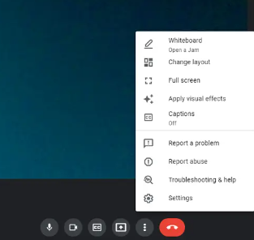For a text only interactions I would create a specific command that shows on the screen the menu with a number for each option and the user will select the desired command pressing the specific number.
In meeting settings area we have plenty of radio boxes that are idioms.
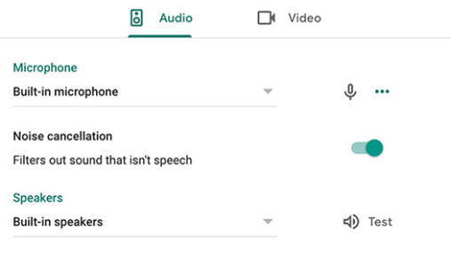For a text only interactions I would create a specific command for both Audio and Video menu with a number for each option and the user will select the desired option writing both menu name and the option number: ’’Audio 1”; ’’Video 5’’.
Metaphors
We encounter metaphor that suggests if microphone is on or off.
A text only interaction app could replace this with a text saying: “microphone: on/off”.
Another metaphor is used for raising hand.
A text only interaction app could replace this with a text saying: “hand: on/off”.
Discuss the cognitive overload in special conditions/contexts.
According tu uxplanet.org: “In terms of UX design, cognitive load is the strain a user experiences when he/she has to think too much just to get something done. Anything that requires users to stop and figure out what to do next is cognitive load.”
1) Cognitive overload can occur during a Google Meet in special conditions/contexts where the participant has multiple distractions that can draw their attention away from the meeting. For example, having many tabs open and receiving numerous notifications can cause cognitive overload, leading to a reduced attention span and decreased productivity during the meeting. Without a dedicated desktop app for Google Meet, it can be challenging to reduce cognitive overload in such situations. One strategy is to close all other apps and tabs except for those needed for Google Meet. However, this may be challenging for some individuals who struggle with organization
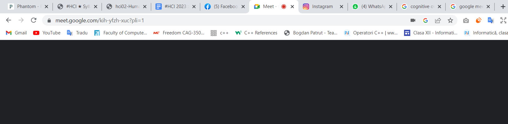2) Cognitive overload can occur in various special conditions, including when a person is sharing their screen during a Google Meet call while at home with family members who may be making noise or causing distractions. In such situations, the person may struggle to concentrate on the meeting and may experience a decrease in their overall productivity. Furthermore, when the person wants to stop sharing their screen, it can be challenging for them to find the appropriate controls, especially if they have accidentally shared their entire screen instead of a specific window. This can lead to additional cognitive overload and frustration, as the person is then presented with multiple buttons and options to close the share screen feature.
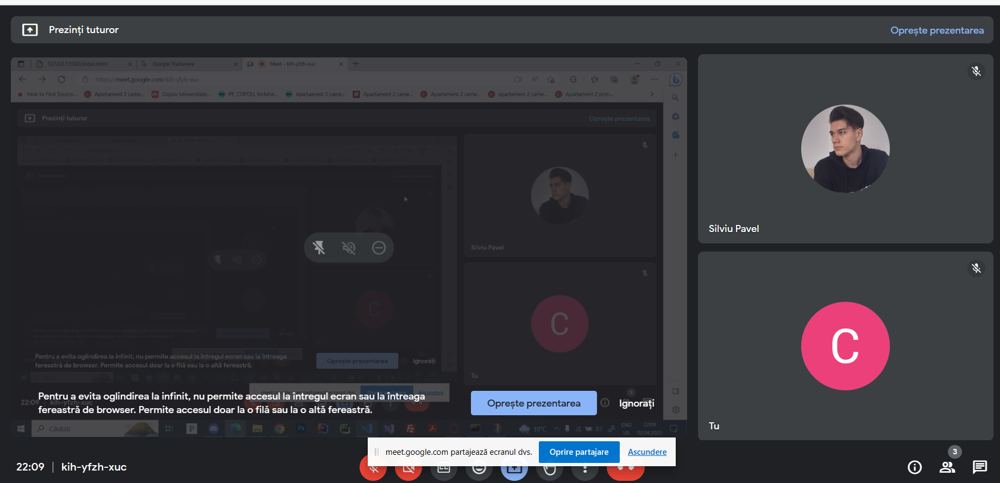List minimum three improvements that can be made to optimize these applications from the point of view of the main audience on at least two platforms – for instance, Web + mobile native, desktop native + mobile native. Each improvement will be listed
How the empiric laws (Fitts’, Hick’s, Steering) might be reconsidered/adapted in the context of multi-device interaction?
List three new features that can be added to improve the experience and sketch those new features on paper and/or digitally.